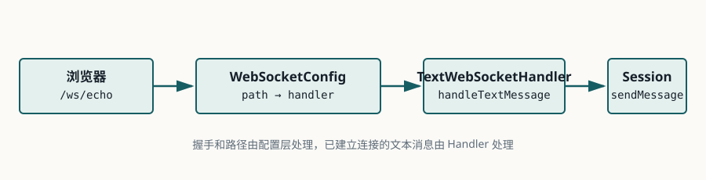

Lesson 0003 · Spring Boot
用 Spring Boot 跑通双向消息
本课的唯一目标：用 Java 25 和 Spring Boot 4.1.1 启动一个原生 WebSocket 回显服务，并在 DevTools 中看到 101 和双向消息。
本课的独立示例位于 examples/0003-spring-boot-websocket-echo。优先运行示例，再回到本课阅读每个文件承担的职责。
1. 依赖只保留必要部分
新建 Maven 项目，使用下面的 pom.xml。将 Java 版本显式固定为 25；第一次构建会验证本地 JDK、Maven 和 Spring Boot 版本是否兼容。
<parent>
<groupId>org.springframework.boot</groupId>
<artifactId>spring-boot-starter-parent</artifactId>
<version>4.1.1</version>
</parent>
<properties>
<java.version>25</java.version>
</properties>
<dependencies>
<dependency>
<groupId>org.springframework.boot</groupId>
<artifactId>spring-boot-starter-websocket</artifactId>
</dependency>
<dependency>
<groupId>org.springframework.boot</groupId>
<artifactId>spring-boot-starter-test</artifactId>
<scope>test</scope>
</dependency>
</dependencies>
2. 启动 Spring Boot
先创建最小启动类。它负责启动 Spring 容器，扫描并装配后面的 Handler 和 WebSocket 配置。
package com.example.websocket;
import org.springframework.boot.SpringApplication;
import org.springframework.boot.autoconfigure.SpringBootApplication;
@SpringBootApplication
public class WebSocketApplication {
public static void main(String[] args) {
SpringApplication.run(WebSocketApplication.class, args);
}
}
3. Handler 是协议事件的落点
Handler 接收已经完成 WebSocket 握手的会话和消息。它不是 HTTP Controller：方法接收的是 WebSocket 消息，不是一次 HTTP 请求。
package com.example.websocket;
import java.io.IOException;
import org.springframework.stereotype.Component;
import org.springframework.web.socket.TextMessage;
import org.springframework.web.socket.WebSocketSession;
import org.springframework.web.socket.handler.TextWebSocketHandler;
@Component
public class EchoWebSocketHandler extends TextWebSocketHandler {
@Override
protected void handleTextMessage(WebSocketSession session,
TextMessage message) throws IOException {
session.sendMessage(new TextMessage("echo: " + message.getPayload()));
}
}
4. 把 URL 映射到 Handler
package com.example.websocket;
import org.springframework.context.annotation.Configuration;
import org.springframework.web.socket.config.annotation.EnableWebSocket;
import org.springframework.web.socket.config.annotation.WebSocketConfigurer;
import org.springframework.web.socket.config.annotation.WebSocketHandlerRegistry;
@Configuration
@EnableWebSocket
public class WebSocketConfig implements WebSocketConfigurer {
private final EchoWebSocketHandler echoHandler;
public WebSocketConfig(EchoWebSocketHandler echoHandler) {
this.echoHandler = echoHandler;
}
@Override
public void registerWebSocketHandlers(WebSocketHandlerRegistry registry) {
registry.addHandler(echoHandler, "/ws/echo")
.setAllowedOriginPatterns("*");
}
}
setAllowedOriginPatterns("*") 只用于本地练习，方便从不同页面测试。生产环境应列出明确的前端 Origin，并结合身份认证；Origin 校验不是完整的用户鉴权。
5. 启动并验证
准备一个带 @SpringBootApplication 的启动类后执行：
mvn -q test mvn spring-boot:run
打开任意能运行 JavaScript 的页面，在 DevTools Console 执行：
const socket = new WebSocket("ws://localhost:8080/ws/echo");
socket.onopen = () => socket.send("hello");
socket.onmessage = event => console.log(event.data);
socket.onclose = event => console.log("closed", event.code, event.reason);
socket.onerror = event => console.error("websocket error", event);
预期结果：
- Network 的 WS 记录中，握手响应为
101 Switching Protocols。 - Messages/Frames 中看到客户端发送的
hello。 - 收到服务端返回的
echo: hello。
6. 源码导读：一条消息经过哪里
先看启动类：它只负责启动 Spring 容器。真正的 WebSocket 路径在配置类中注册。
浏览器连接 /ws/echo
↓
WebSocketConfig.registerWebSocketHandlers
↓
EchoWebSocketHandler.handleTextMessage
↓
session.sendMessage("echo: ...")

Handler 不负责判断 URL，也不负责创建连接；它只处理已经完成握手的文本消息。这个边界让握手排错、路径映射和业务消息处理可以分别验证。
测试目前只证明 Spring 容器能启动，不证明浏览器真的完成了 WebSocket 握手和回显；后者仍需要 DevTools 或集成测试验证。
7. 用失败现象定位层次
| 现象 | 优先检查 |
|---|---|
| 连接返回 404 | 检查路径是否为 /ws/echo，以及 Handler 是否注册。 |
| 连接返回 403 | 检查 Origin 配置、反向代理策略和认证拦截器。 |
| 没有 101 | 先看是否启动了正确端口，以及请求是否进入 WebSocket 映射。 |
| 101 后没有回显 | 检查 handleTextMessage 是否被调用和服务端日志。 |
| 服务端能回显但无法扩展到多客户端 | 当前 Handler 只处理单个 Session，广播需要显式维护会话集合。 |
8. 练习：先回忆，再验证
完成本地启动后，回答下面 4 个问题。不要只贴代码，说明每个答案对应哪一层：
-
为什么这里使用
TextWebSocketHandler，而不是@RestController？查看答案
TextWebSocketHandler处理握手完成后的 WebSocket 文本消息和会话；@RestController处理独立的 HTTP 请求/响应，不能直接代表持续的 WebSocket 消息通道。 -
registry.addHandler(echoHandler, "/ws/echo")与普通 HTTP 路由有什么不同？查看答案
它把 WebSocket 握手路径映射到 Handler。请求先以 HTTP Upgrade 到达该路径，返回 101 后，同一连接上的后续消息由 Handler 接收，而不是每条消息重新走 HTTP Controller。
-
为什么
setAllowedOriginPatterns("*")不能直接用于生产？查看答案
它允许任意 Origin 发起浏览器连接，扩大了跨站连接的范围。生产环境应限制可信 Origin，并单独设计 Cookie、Token 或其他身份认证和授权策略。
-
如果连接返回 101 但收不到回显，你会按什么顺序排查？
查看答案
先确认客户端确实发送了文本消息，再看 Handler 是否被调用、Payload 是否正确、服务端是否抛异常，最后检查
session.sendMessage和连接是否在发送前已经关闭。
快速检查：哪个结果证明 HTTP 握手已经升级为 WebSocket？